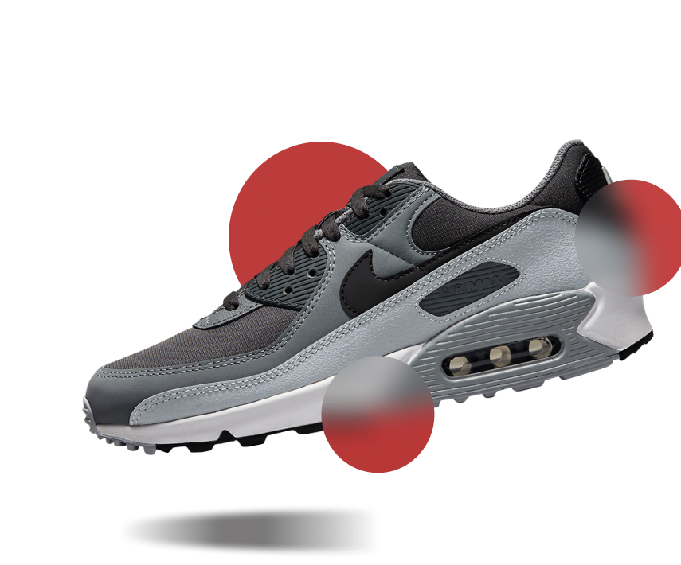

AIRMAX
NIKE AIR MAX 90 $100Nike Air Max is a line of shoes produced by Nike, Inc., with the first model released in 1987. Air Max shoes are identified by their midsoles incorporating flexible urethane pouches filled with pressurized gas, visible from the exterior of the shoe and intended to provide cushioning to the underfoot.
